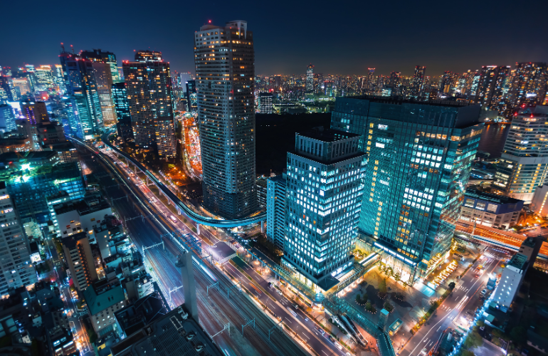
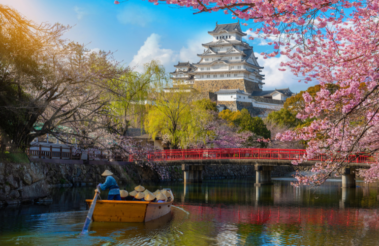
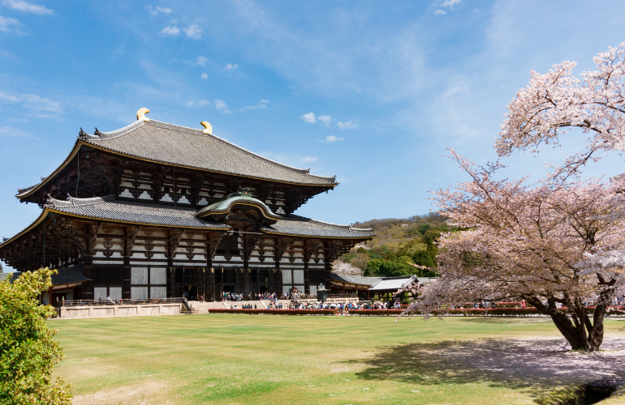
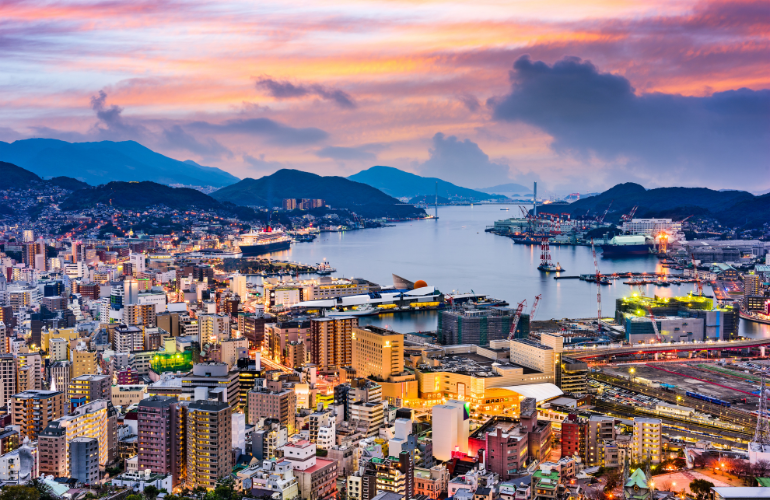
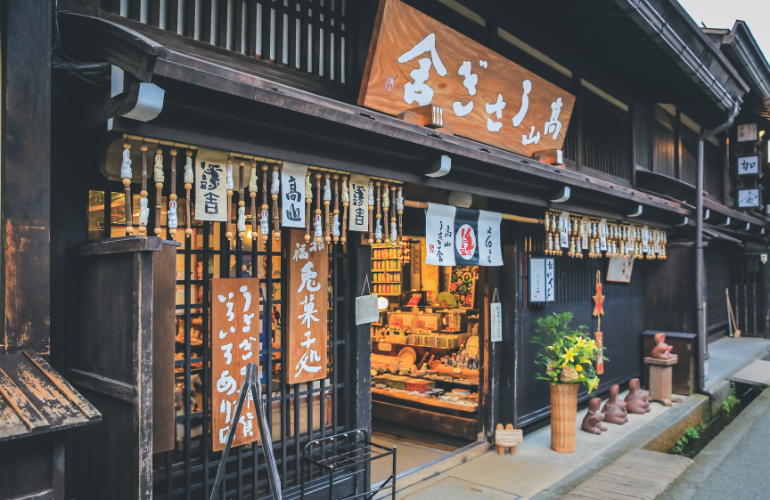

Nos Destinations

Tokyo
Pleine de vie, Tokyo est la zone urbaine la plus peuplée au monde. Elle se situe sur Honshu qui est l'île principale de l'archipel.
Séduit par son aspect hétéroclite avec ses Temples, ses Jardins et sa Culture Ancestrale.
Plus d'information
Kyoto
Rien qu epour son aspect culturel, religieux et historique, Kyoto est à ne surtout pas manquer lors des voyages au Japon.
Plonger dans le passé du pays qui fut l'ancienne capital du Japon.
Plus d'information
Osaka
Troisième plus grande ville du Japon, Osaka est célèbr pour sa richesse gastronomique exceptionelle.
Emprunter les petits bateau pour déambuler sur les canaux de la ville.
Plus d'information
Nara
Répuée grâce à son rôle essentiel dans le passé du Japon, elle représente la première cité impérial du pays.
Rencontrez aussi les cerfs en libertés dans le parc de Nara.
Plus d'information
Nagasaki
Nagasaki, la seule ville à entretenir des liens exterieur lors de la fermeture du pays à la période de l'Edo.
Visitez la vile où les styles architecturaux se mélangent.
Plus d'information
Takayama
Déambuler dans les ruelles du quartier historique de Takayama aussi appeler "petite Kyoto" pour plonger dans l'époque Edo.
Assistez au festival de Takayama pendant votre séjour.
Plus d'information